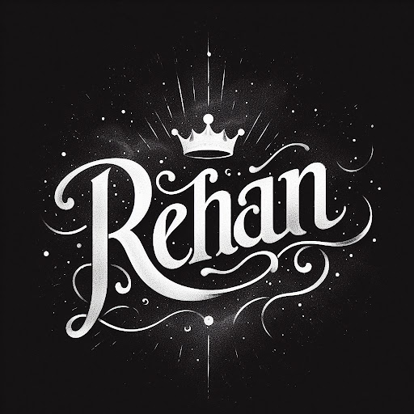

Qui es Rehan Ikhlaq?
És un noi que li agrade molt juagar al futbol, el seu jugador preferit es CR7.
Amb ganes de aprendre i superar qualsevol obstacle a la vida.
però també li encanta fer bromes amb la gent propera.
